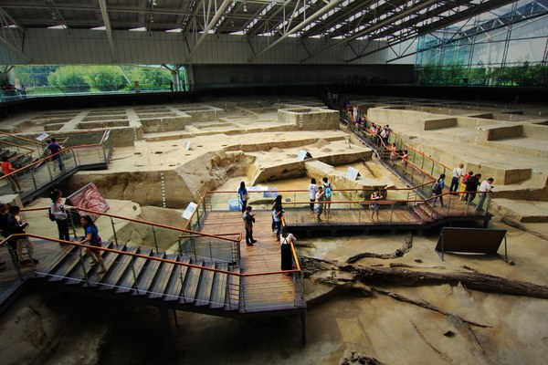
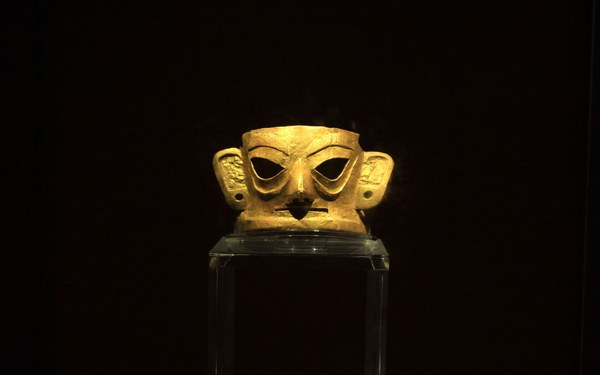
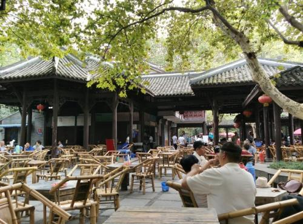
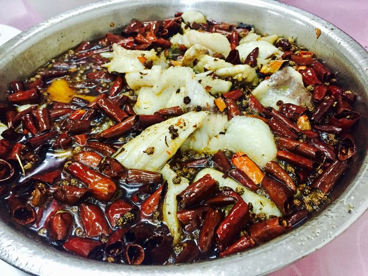
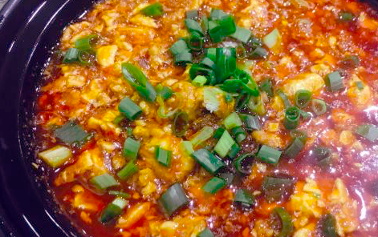
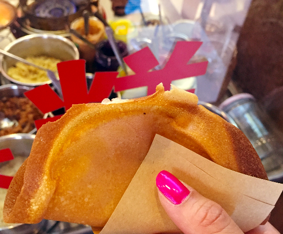
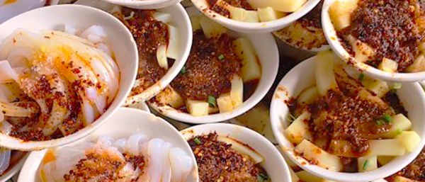
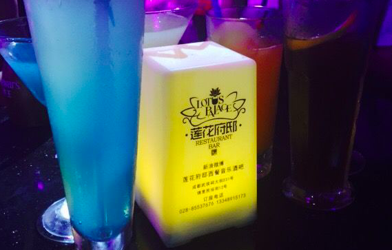
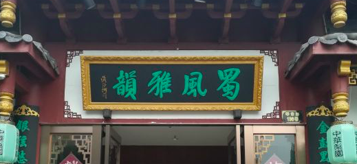

成都，一座来了就走不了的城市。
这里有数不胜数的美食，这里包容随性、生活气息浓厚，如果没做好离开以后失魂落魄的准备，请不要轻易来成都。假如真的准备好了，那就快来好好感受成都人民有滋有味的生活吧。
好逛
① 大熊猫繁育基地
现在是爱猫即正义的时代，也说不清喵星人为何有如此魅力，就只是看着它，哪怕没有任何互动，都觉得是一种享受。 但是，如果跟熊猫比起来，喵星人的功力就还差得远呢。
看熊猫才是真正的享受，熊猫说自己憨态可掬第二，那没人敢说第一。 不论是摊着吃竹子、挂在树上睡大觉、翻滚着互相嬉戏，都看不烦啊。
所以去成都，一定一定要去的就是大熊猫繁育基地，尤其是没有大规模见过熊猫的小伙伴。
整个基地面积非常大，逛大半天都没问题，除了大熊猫，也圈养、散养着其他一些动物， 比如走着路就突然能看到一只散步的孔雀，这种体验也是很难得了吧。
② 金沙遗址博物馆
由于蜀地的悠久历史，成都及其周边多次出土过重量级文物， 比如金沙遗址，就有精美绝伦的太阳神鸟和大金面具出土，而后依遗址而建了如今的金沙博物馆。

「太阳神鸟」金饰图案，也于 2005 年被国家文物局公布为中国文化遗产标志。

③ 人民公园
成都的公园都是免费的，去公园走一圈，真的可以生动真切地看到成都人民的生活热情。

你会看到喝着茶、搓着麻将的男女老少、退休的爷爷奶奶叔叔阿姨自行组织的民间乐队的演出，学轮滑的小朋友，约会的少女少女，还能体验成都特色的掏耳朵服务。
每个公园都有自己独特的景致和特色，如果时间只允许逛一个公园，那首推人民公园咯。够大够有趣，绝对不虚此行。
好吃
① 汇川鱼馆
这家馆子已经了多年，深藏于小巷之中，主打菜就是水煮鱼。
神奇之处是，它家没有菜单，客人甚至也没有点菜的权力——老板会按人头帮你决定要几斤的鱼，帮你选择其他小菜的搭配。

水煮鱼是一大盆端上来，麻椒、辣椒在表层拥挤地沸腾着，服务员会帮你把这层小可爱们盛出来，而后就可以开动了。
鱼肉鲜美入味，越吃越嗨。更令人惊喜的是，它家的几道小菜也都非常好吃呢，萝卜丝、无骨鸡爪、芋头青菜，随便吃绝对没有坑哦。
② 明婷饭店
在成都，无论你是什么身份、职业，都热爱吃苍蝇馆子。当然，不是这些饭馆里真的有苍蝇，只是店家精力主要放在食物上，对环境、服务可能没那么高的追求。 而只要东西好吃，食客们也完全可以原谅其他一切的不足。
明婷饭店，便可以算是成都苍蝇馆子的鼻祖。饭店名字是老板和老板娘名字的合称，最开始是为了患病的儿子，而开了一家小餐馆，之后名声越来越响。到如今的新店，已经不是很苍蝇了。

但是生意依旧非常好、味道也够赞。 招牌菜是：豆腐脑花、荷叶酱肉、呛香鱼、葱香腰花、水豆豉鸭肠、奇香排骨、莲白粉丝、霸王黄喉、米凉粉烧牛肉……光说名字，就已经够残忍了吧！忍不了就自己去吃咯。
③ 贺记蛋烘糕
蛋烘糕是成都的一种特色、传统小吃，外皮由小小的铜锅摊成，类似蛋糕的口感，内里可以根据自己的喜好添加肉松、奶油、豇豆丁等咸甜辣口味的馅料。

其中名气最大的就是贺记蛋烘糕，大家可以就近找门店去品尝哦。
④ 洞子口张老二凉粉
这家小吃店也是历史悠久，在成都的名气、人气都很高。
它家主要做凉粉，有豌豆做的白凉粉、黄凉粉，也有大米做的米凉粉，加入多种调味料，便是张老二家的经典味道了。

另外，甜水面也特别值得尝试哦！甜水面的面很粗，在成都的各种面中，算是豪放派。味道是香甜微辣，口感非常劲道，很多北方小伙伴也都爱得不行。
好看
除了好吃好玩，成都也很文艺，有特色的川剧，也有歌手辈出的明星酒吧。
① 莲花府邸醉音乐
成都的酒吧是热爱音乐的，也一直有碾压级的驻唱歌手，很多当红歌手都曾经在成都有过一段酒吧生涯， 比如张靓颖在音乐房子，谭维维、郁可唯、王铮亮在莲花府邸，小酒馆现在太红，就不说了。
这里就着重推荐一下莲花府邸咯， 因为就在锦里这个游客必经之地，可是比起那些不正宗不可口的小吃来说，莲花府邸绝对更值得一游呀。

酒吧的装修很别致、音乐氛围很好，每晚都有多位驻唱歌手唱歌， 各种风格的歌曲都会涉及，唱得还都非常不错。有兴致的话，你还可以点歌。
有最低消费，不过肯定在可以承受的范围。想要一个有酒有音乐的完美夜晚，就来莲花府邸吧。
② 蜀风雅韵看川剧
川剧是四川的一个文化特色，成都现在还有不错的可以观赏川剧表演的地方，比如蜀风雅韵。
在这里，能看到非常正规、完整的川剧表演，在川剧名段中，穿插着各种川剧绝活：变脸、吐火、手影戏……

票是按座位的位置收费的，想看得过瘾当然就要买离舞台最近的 VIP 票啦，如果在预算之内的话。
戏票中会包含小吃、茶水等，另外，你还可以体验穿戏服、掏耳朵、古式敲背等特色服务。